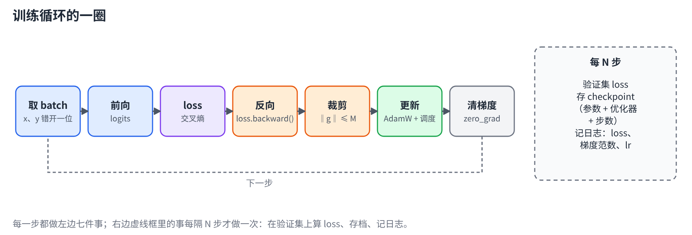
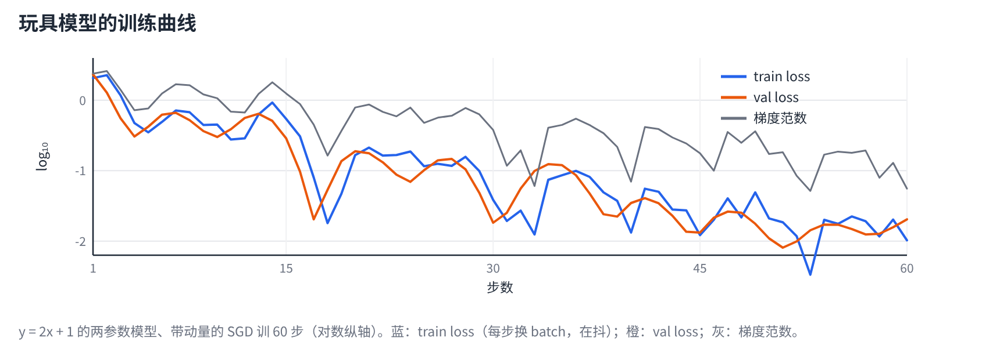

第 5 章 · 一次完整训练：切 batch、每一步做什么、存档、看哪几条曲线
本地运行
git clone https://github.com/wikieden/beyond-transformer
cd beyond-transformer/code/notebooks
pip install jupyterlab torch numpy
jupyter lab ch05_training_loop.ipynb也可以下载后直接用 VS Code 打开 .ipynb 运行。需要 GPU 的章节在 Colab 里选「代码执行程序 → 更改运行时类型 → GPU」。
本章回答：第 1–4 章有了 loss、梯度、优化器和学习率，怎么把它们串成一次真正的训练？语料是一整串 token，batch 是怎么从里面切出来的，输入和答案为什么错开一位？一共训了多少 token 怎么算？中途断了怎么接着训，checkpoint 里只存参数够不够？训练时该盯哪几条曲线？
讲解日期：2026-11-25 · 上一章：第 4 章 学习率调度与梯度裁剪 · 下一章：第 6 章 attention 的起源
对应原文：CS336 a1 handoutcs336-spring2025/materials/text/cs336_spring2025_assignment1_basics.txt§5.1 Data Loader L1671–L1684（整串 token、B 条长 m 的序列、目标错开一位）；§5.2 Checkpointing L1716–L1731（参数 + 优化器状态 + 步数）；§7.1–§7.2 L1870–L1930（实验记录、TinyStories、总 token 数 327,680,000）
本章缩写：B = batch size（一批几条序列）；m = context length（上下文长度：每条序列几个 token）；step（一步：一次前向 + 反向 + 更新）；epoch（一轮：把整份数据看一遍）；checkpoint（存档：能接着训所需的全部状态）；val = validation（验证集：不参与训练、只用来看模型有没有学偏的数据）；<|endoftext|>（文档之间的分隔符 token）。全部缩写见 附录 · 缩写与术语表
讲解
第一步：从一整串 token 里切 batch（2026-11-25）
类比：从一卷长长的录音带上随机剪片段。 所有文档首尾相接，中间插一个分隔符 <|endoftext|>，变成一卷长带子（L1672–L1675）。训练时每次随机挑 B 个起点，各剪一段长 m 的片段，就是一个 batch。
输入和答案错开一位：语言模型的任务是“看到前面，猜下一个”。所以从起点 s 剪 m 个 token 当输入 x，再从 s + 1 剪 m 个当答案 y，y 的第 i 个就是 x 第 i 个的“下一个词”（L1676–L1678）。
数字演示（token 串长 12，m = 4，B = 2，起点 1 和 6，从 0 数）：
| 第 0 条（起点 1） | 第 1 条（起点 6） | |
|---|---|---|
| 串 | [5, 9, 2, 7, 1, 8, 3, 6, 4, 0, 2, 9] | [5, 9, 2, 7, 1, 8, 3, 6, 4, 0, 2, 9] |
| x | [9, 2, 7, 1] | [3, 6, 4, 0] |
| y | [2, 7, 1, 8] | [6, 4, 0, 2] |
x、y 的形状都是 (B, m) = (2, 4)。一条长 m 的序列一次前向能给出 m 个“猜下一个词”的训练信号（第 1 章式 16 对所有位置取平均）。起点从 0 到 n − m − 1 都行（y 要多用一个 token），长 12、m = 4 时共 8 个可选起点。
这种切法的好处（L1679–L1684）：所有序列一样长，不用补齐（padding）；不用把整份数据读进内存，用 np.memmap 按需读就行。代价是一个片段可能跨过文档边界，所以要靠分隔符让模型知道“前面那篇结束了”。
一句话：所有文档拼成一串、中间插分隔符；随机挑 B 个起点各剪 m 个 token 当输入，错开一位再剪 m 个当答案。
第二步：算 token 账（2026-11-25）
一次训练“看了多少数据”用 token 数衡量：
| B | m | 步数 | 总 token 数 |
|---|---|---|---|
| 32 | 256 | 5,000 | 40,960,000 |
| 64 | 512 | 10,000 | 327,680,000 |
a1 在 TinyStories 上的标准实验就要求总 token 数是 327,680,000（L1926）：B、m、步数怎么配都行，乘起来对上就是同样的数据量，换配置比较才公平。token 数还决定计算量：训练 FLOPs ≈ 6 × 参数 × token 数（第 8 章推）。
一句话：总 token 数 = batch × 上下文长度 × 步数，是比较不同训练配置的公共尺子。
第三步：一步做什么、看哪几条曲线（2026-11-25）
每一步固定是五件事：
- 取一个 batch（第一步）；
- 前向：模型算出每个位置的 logits，和 y 算交叉熵（第 1 章）；
- 反向：
loss.backward()得到所有参数的梯度（第 2 章）； - 裁剪梯度、按当前步的学习率更新参数（第 3、4 章）；
- 清空梯度，记日志；每隔一段时间在验证集上算一次 loss、存一次档。

图 5-1 · 训练循环的一圈：取 batch → 前向 → loss → 反向 → 裁剪 → 更新 → 清梯度。右边虚线框是“每隔 N 步才做”的事：验证、存档、记日志数字演示（一个两参数的玩具模型拟合 y = 2x + 1，带动量的 SGD，lr = 0.1，batch 16，训 60 步）：
| 步 | train loss | val loss | 梯度范数 |
|---|---|---|---|
| 1 | 2.0681 | 2.3345 | 2.3898 |
| 16 | 0.3081 | 0.0972 | 0.8841 |
| 31 | 0.0193 | 0.0253 | 0.1175 |
| 46 | 0.0201 | 0.0214 | 0.1002 |
| 60 | 0.0103 | 0.0203 | 0.0557 |
最后学到 w = 2.080、b = 1.079。train loss 每步都在抖（每个 batch 不同），所以要看平滑后的趋势；val loss 才说明模型有没有学到“通用”的东西。训练时至少盯四条曲线：
| 曲线 | 正常的样子 | 出问题的信号 |
|---|---|---|
| train loss | 先快降后慢降，带噪声 | 突然跳高（loss spike），或者长时间不降 |
| val loss | 跟着 train 降 | train 还在降、val 开始升：过拟合 |
| 梯度范数 | 开头大、慢慢变小变稳 | 频繁超过裁剪上限，或者突然暴涨 |
| 学习率 | 按调度走（第 4 章） | 和预期不符：调度写错了 |

图 5-2 · 玩具模型 60 步的训练曲线（对数纵轴）。蓝：train loss（每步都在抖）；橙：val loss；灰：梯度范数。val 和 train 一起降、最后贴在噪声水平 0.01–0.02 附近读曲线时种子方差、平滑滞后这些坑，见《数学与实验统计》第 7 章。
一句话：每步“取 batch、前向、反向、裁剪更新、清梯度”；盯 train、val、梯度范数、学习率四条曲线。
第四步：checkpoint 要存什么（2026-11-25）
训练可能跑几天，机器会挂、任务会超时。checkpoint 要存下“接着训所需的全部状态”（L1724–L1728）：
- 模型参数：最起码的；
- 优化器状态：AdamW 的 m、v（第 3 章），动量 SGD 的速度 v；
- 步数：学习率调度要知道现在是第几步；
- （更严格的还要存）随机数生成器的状态，保证接下来取的 batch 一样。
数字演示（同一个玩具模型，总共 60 步）：
| 做法 | 最后的 w | 最后的 b |
|---|---|---|
| 不断地训 60 步 | 2.079918 | 1.078894 |
| 训 30 步存档（全部状态），读档再训 30 步 | 2.079918 | 1.078894 |
| 训 30 步只存参数（动量清零），读档再训 30 步 | 2.007454 | 1.003701 |
完整存档续训和不断训的结果一模一样。只存参数时，动量被清零，接下来的走法就变了，最终结果对不上。这个例子里恰好离真值更近，但这只是运气；对 AdamW 来说，m、v 清零等于重新从头估计，前几步的步长会被放大（第 4 章第二步），大模型上可能直接引起 loss 尖峰。
场景代码：PyTorch 存档和读档（真实库调用；本书环境没装 torch，没跑过）：
torch.save({"model": model.state_dict(), "optimizer": opt.state_dict(), "step": step}, "ckpt.pt")
ck = torch.load("ckpt.pt")
model.load_state_dict(ck["model"]); opt.load_state_dict(ck["optimizer"]); step = ck["step"]
更多细节（state_dict 里有什么、怎么省空间）见《PyTorch 从里到外》第 10 章；完整的训练循环写法见第 9 章。
一句话：checkpoint 至少存参数、优化器状态和步数；只存参数，续训时动量和 Adam 的矩被清零，结果就和不断训对不上。
动画演示：训练循环转一圈

可交互版：animations/05-training-loop.html（▶ 播放转圈；滑块调已经训了几步，看右边曲线怎么长出来）。
怎么看：
- 左边是 token 串，高亮的两段是这一步抽到的 x（蓝）和 y（橙），错开一位（第一步）；
- 中间七个框依次亮起：取 batch → 前向 → loss → 反向 → 裁剪 → 更新 → 清梯度（第三步）；
- 右边 train loss 和 val loss 曲线随步数延长；每 15 步出现一个“存档”标记（第四步）。
练习与作答记录
题 1（第一步）：token 串是 [4, 8, 1, 3, 9, 2, 7]，m = 3。起点 2 的 x 和 y 各是什么？一共有多少个可选起点？
题 2（第二步）：想让总 token 数还是 327,680,000，但上下文长度改成 1024、batch 改成 32，要训多少步？
题 3（第三步）：日志里 train loss 一直在降，val loss 第 3000 步后开始上升。这说明什么？你会怎么做？
题 4（第四步）：存档时存了参数和优化器状态，却忘了存步数。读档后步数从 0 重新数，用第 4 章的 warmup + cosine 调度，接下来的学习率会怎么走？对训练有什么影响？
口诀
文档拼成一长串，中间插分隔；随机剪段，输入答案错一位。
批乘长乘步数，就是总 token。
取批、前向、算 loss，反向、裁剪、更新、清梯度。
盯四条线：train、val、梯度范数、学习率；val 一升就是过拟合。
存档三件：参数、优化器、步数，少一件就接不上。
本章复习卡片
必背：B26–B27（B26 从 token 串切 batch 与总 token 数；B27 训练一步的五件事、该盯的曲线和 checkpoint 要存什么）。练习做完后，按答错、卡住的地方再补。
附录 · 延伸阅读
留给以后深入学习用，不影响本章主线。★ 是建议先读的。
推荐阅读
| 读什么 | 读哪里 | 读它为了什么 |
|---|---|---|
| ★ CS336 a1 handout | §5.1 L1671–L1684；§5.2 L1716–L1731；§7.1–§7.2 L1870–L1930 | 作业里的数据加载、存档和实验要求 |
| ★ 《PyTorch 从里到外》第 9 章 训练循环、第 10 章 存档 | 全部 | PyTorch 里的完整写法 |
| 《数学与实验统计》第 7 章 读曲线和消融 | 种子方差、平滑 | 怎么从抖动的曲线里看出真变化 |
nanoGPT train.py（transformer-deep-dive/materials/code/nanoGPT/repo/） |
get_batch、主循环 |
一个真实项目的训练循环 |
数学原理
- 可选起点数：长 n 的串、窗口 m，需要 x 和 y 各 m 个、共 m + 1 个连续 token，起点有 n − m 个。
- 随机切片 ≈ 有放回抽样：每步独立随机挑起点，一个 epoch 的说法只是近似（有的片段被看了多次，有的没看到）。
- 动量对状态的依赖：带动量的更新是 θ 和 v 的联合递推，只恢复 θ 等于把 v 重置成 0。
公式清单
| 公式 | 意思 |
|---|---|
| x = s[i : i+m]，y = s[i+1 : i+m+1] | 输入和答案错开一位 |
| 起点数 = n − m | 可选的切片个数 |
| 总 token = B × m × 步数 | token 账 |
| checkpoint = | 续训所需的状态 |
代码对照：把本章的数字用代码算一遍
NumPy。代码在仓库本地
beyond-transformer/solutions/chapter-code/ch05_training_loop.py，配套测试tests/test_ch05.py，notebook 在notebooks/ch05_training_loop.ipynb：
bash cd beyond-transformer/solutions/chapter-code uv run python ch05_training_loop.py uv run pytest tests/test_ch05.py
讲义 ↔ 代码：
| 讲义 | 公式 | 写法 | 跑出来 |
|---|---|---|---|
| 第一步 切 batch | 错开一位 | windows(STREAM, [1, 6], 4) |
x = [[9, 2, 7, 1], [3, 6, 4, 0]] |
| 第二步 token 账 | B × m × 步数 | token_budget(64, 512, 10000) |
327,680,000 |
| 第三步 训练循环 | 五件事 | train(60) |
w = 2.080、b = 1.079 |
| 第四步 存档 | 全部状态 vs 只存参数 | resume_demo() |
一致 vs 对不上 |
关键几行：
x = np.stack([stream[s : s + m] for s in starts]) # 输入
y = np.stack([stream[s + 1 : s + m + 1] for s in starts]) # 答案：错开一位
vw, vb = beta * vw + gw, beta * vb + gb # 动量也是状态，要存
r1.bit_generator.state = rng_state # 随机数状态也恢复，batch 才对得上
代码里才看得到的 2 件事：
- 随机数状态也是 checkpoint 的一部分：
resume_demo恢复了随机数生成器，续训取到的 batch 才和不断训一样，结果才能逐位一致。 - 这里是两参数的玩具模型：作业要写的
get_batch（返回指定设备上的张量）、save_checkpoint/load_checkpoint和完整的训练脚本留给自己写。
自己改一改（不影响练习答案）：
- 把
train的 lr 改成 0.5，曲线还收敛吗？梯度范数怎么变？ - 把
resume_demo里续训时的随机数生成器换成新的种子（不恢复状态），“完整存档续训”还和不断训一致吗？